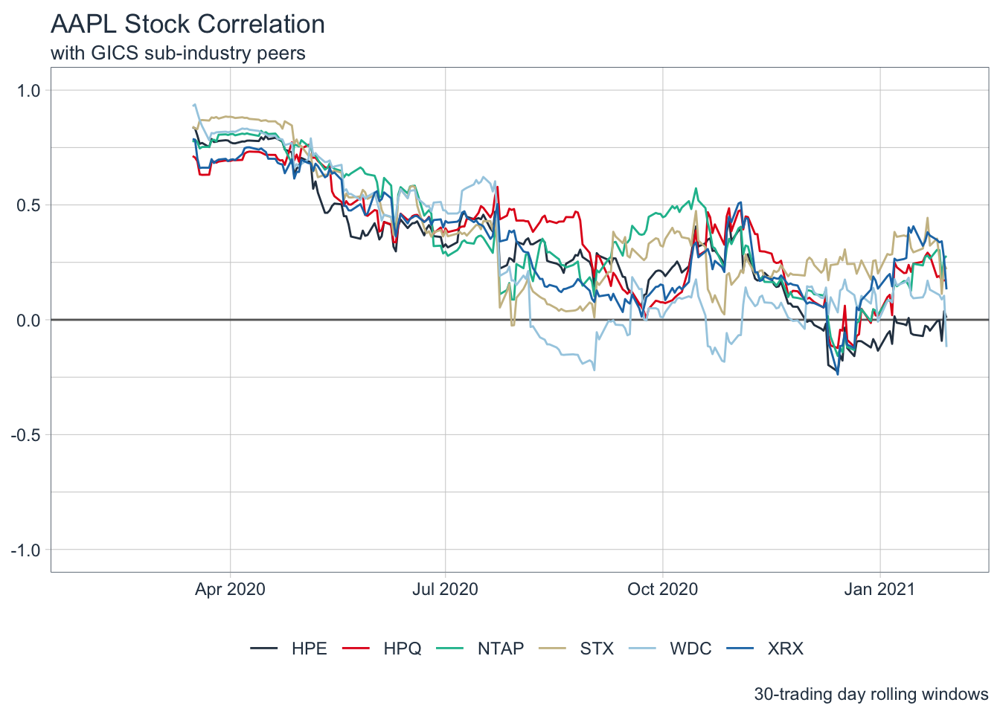
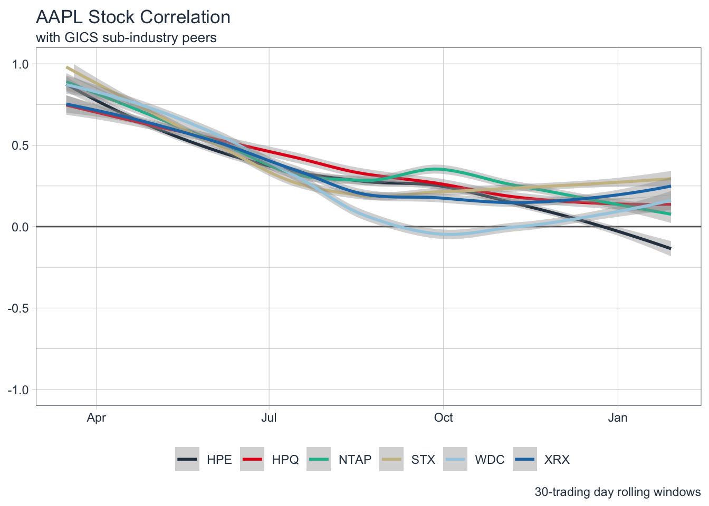

library(tidyverse) # for tidy/dplyr work
library(rvest) # for web-scraping
library(tidyquant) # for quant work (tiingo pricing, tq_mutate ...)Better Stock Correlation Analysis
tidyquant
tibbletime
finance
Building on the previous post, with some considerations towards efficiency and increasing depth of analysis.
Short-comings of previous analysis
- too many steps to get correlations
- don’t need to calculate all correlation pairs, just pairs including AAPL
- point-in-time versus evolution of correlation
needs a plot, likely interactive (plotly)
API Consideration - repeated pulls
Getting to a completed post is an iterative process, that involves: work, knitting the document, assessing the current state, deciding what to add, then repeating until the final version. This leads to repetitive pulls of the data from Tiingo. So, I begin by executing a single pull and storing it, so that we avoid this repetition.
Run this chunk once while working on the post, then set chunk options to eval=FALSE and echo=TRUE so that the code displays, but is not executed.
# create S&P 500 constituent table
sp500_tbl <- read_html(
"https://en.wikipedia.org/wiki/List_of_S%26P_500_companies"
) %>%
html_element("#constituents") %>%
html_table() %>%
janitor::clean_names()
write_csv(sp500_tbl, "data/sp500.csv")
# create AAPL peer pricing table
peer_pricing_tbl <- sp500_tbl %>%
filter(
gics_sub_industry == sp500_tbl %>% filter(symbol == "AAPL") %>% pull(gics_sub_industry)
) %>%
pull(symbol) %>%
tq_get(.x, get = "tiingo")
write_csv(peer_pricing_tbl, "data/peer_pricing.csv")Once this chunk has been run successfully, just load the data from the local csvs:sp500.csvandpeer_pricing.csv`.
sp500_tbl <- read_csv("data/sp500.csv")
peer_pricing_tbl <- read_csv("data/peer_pricing.csv")
glimpse(sp500_tbl)Rows: 505
Columns: 9
$ symbol <chr> "MMM", "ABT", "ABBV", "ABMD", "ACN", "ATVI", "AD…
$ security <chr> "3M Company", "Abbott Laboratories", "AbbVie Inc…
$ sec_filings <chr> "reports", "reports", "reports", "reports", "rep…
$ gics_sector <chr> "Industrials", "Health Care", "Health Care", "He…
$ gics_sub_industry <chr> "Industrial Conglomerates", "Health Care Equipme…
$ headquarters_location <chr> "St. Paul, Minnesota", "North Chicago, Illinois"…
$ date_first_added <chr> "1976-08-09", "1964-03-31", "2012-12-31", "2018-…
$ cik <dbl> 66740, 1800, 1551152, 815094, 1467373, 718877, 7…
$ founded <chr> "1902", "1888", "2013 (1888)", "1981", "1989", "…glimpse(peer_pricing_tbl)Rows: 1,764
Columns: 14
$ symbol <chr> "AAPL", "AAPL", "AAPL", "AAPL", "AAPL", "AAPL", "AAPL", "A…
$ date <dttm> 2020-01-31, 2020-02-03, 2020-02-04, 2020-02-05, 2020-02-0…
$ open <dbl> 320.93, 304.30, 315.31, 323.52, 322.57, 322.37, 314.18, 32…
$ high <dbl> 322.68, 313.49, 319.64, 324.76, 325.22, 323.40, 321.55, 32…
$ low <dbl> 308.29, 302.22, 313.63, 318.95, 320.26, 318.00, 313.85, 31…
$ close <dbl> 309.51, 308.66, 318.85, 321.45, 325.21, 320.03, 321.55, 31…
$ volume <dbl> 49897096, 43496401, 34154134, 29706718, 26356385, 29421012…
$ adjusted <dbl> 76.71393, 76.50326, 79.02891, 79.67334, 80.60527, 79.51223…
$ adjHigh <dbl> 79.97820, 77.70040, 79.22472, 80.49374, 80.60775, 80.34951…
$ adjLow <dbl> 76.41155, 74.90706, 77.73510, 79.05370, 79.37839, 79.00787…
$ adjOpen <dbl> 79.54445, 75.42260, 78.15150, 80.18640, 79.95093, 80.09361…
$ adjVolume <dbl> 199588384, 173985604, 136616536, 118826872, 105425540, 117…
$ divCash <dbl> 0.00, 0.00, 0.00, 0.00, 0.00, 0.77, 0.00, 0.00, 0.00, 0.00…
$ splitFactor <dbl> 1, 1, 1, 1, 1, 1, 1, 1, 1, 1, 1, 1, 1, 1, 1, 1, 1, 1, 1, 1…# calculate returns as well
peer_returns_tbl <- peer_pricing_tbl %>%
group_by(symbol) %>%
tq_transmute(adjusted, periodReturn, period = "daily", col_rename = "return")Fewer steps, fewer pairs
Build a table with AAPL as symbol_1 and peer stocks as symbol_2, using the fact that left_join will create 1-row for every match of date. This is a succinct way of creating all return pairs.
aapl_peer_returns_tbl <-
peer_returns_tbl %>%
filter(symbol == "AAPL") %>%
select(symbol, date, return) %>%
left_join(
peer_returns_tbl %>%
filter(symbol != "AAPL") %>%
select(symbol, date, return),
by = "date",
suffix = c("_1", "_2")
) %>%
select(date, matches("symbol"), everything()) %>%
arrange(symbol_2, date) %>%
filter(!(return_1 == 0 & return_2 == 0)) # remove days where returns == 0
glimpse(aapl_peer_returns_tbl)Rows: 1,506
Columns: 5
$ date <dttm> 2020-02-03, 2020-02-04, 2020-02-05, 2020-02-06, 2020-02-07, …
$ symbol_1 <chr> "AAPL", "AAPL", "AAPL", "AAPL", "AAPL", "AAPL", "AAPL", "AAPL…
$ symbol_2 <chr> "HPE", "HPE", "HPE", "HPE", "HPE", "HPE", "HPE", "HPE", "HPE"…
$ return_1 <dbl> -0.0027462764, 0.0330136720, 0.0081543045, 0.0116969980, -0.0…
$ return_2 <dbl> 0.015075377, 0.019801980, 0.032593620, 0.002014775, -0.012064…Now, calculating correlations is simple via a single summarize call. Note: the use parameter of cor is left as the default “everything” which will cause NA to appear if there are any data issues. This is preferable to just returning a result, as we don’t have any data robustness built into the data pipeline.
aapl_peer_returns_tbl %>%
group_by(symbol_2) %>%
summarize(
cor = cor(return_1, return_2)
)# A tibble: 6 × 2
symbol_2 cor
<chr> <dbl>
1 HPE 0.477
2 HPQ 0.498
3 NTAP 0.537
4 STX 0.548
5 WDC 0.472
6 XRX 0.460It can be seen that we are getting the same results with less effort, e.g. no pivoting when comparing the above to the results shown below.
peer_returns_tbl %>%
# put returns into columns
pivot_wider(names_from = symbol, values_from = return) %>%
# first day return is 0, so remove row
slice(-1) %>%
# remove date column, so you can call `cor` on entire tibble
select(-date) %>%
# calculate correlations
cor() %>%
# `cor` returns a matrix, convert back into tibble
as_tibble(rownames = "symbol_1") %>%
# transform into tidy format for easier processing
pivot_longer(-1, names_to = "symbol_2", values_to = "cor") %>%
# remove the correlations of a stock with itself
filter(!(symbol_1 == symbol_2)) %>%
# group by symbol_1 and arrange descending by correlation
group_by(symbol_1) %>%
arrange(desc(cor)) %>%
# look at first row in each group == highest correlated stock
slice(1)# A tibble: 7 × 3
# Groups: symbol_1 [7]
symbol_1 symbol_2 cor
<chr> <chr> <dbl>
1 AAPL STX 0.548
2 HPE NTAP 0.712
3 HPQ XRX 0.781
4 NTAP HPE 0.712
5 STX WDC 0.705
6 WDC STX 0.705
7 XRX HPQ 0.781Correlation evolution
The above analysis produces a single estimate of correlation using all of the data in the dataset. Since the purpose of calculating these correlations is to find a substitute security for a short time frame, 30 days, it is probably better to have a sense of how stable the relationship between the two stocks is through time.
For this, we will use the rollify function from the tibbletime package. Using the examples given in the documentation makes this relatively simple
library(tibbletime)
cor_roll <- rollify(~cor(.x, .y), window = 30)
aapl_cor_tbl <-
aapl_peer_returns_tbl %>%
group_by(symbol_2) %>%
mutate(cor = cor_roll(return_1, return_2))tibbletime really is a great convenience.
Notice how the correlations are noisy (expected), but have in general declined significantly (unexpected).
aapl_cor_tbl %>%
ggplot(aes(x = date, y = cor, color = symbol_2)) +
geom_hline(yintercept = 0, color = "gray40") +
geom_line() +
ylim(-1, 1) +
labs(
title = "AAPL Stock Correlation",
subtitle = "with GICS sub-industry peers",
caption = "30-trading day rolling windows",
x = NULL, y = NULL, color = NULL
) +
theme_tq() +
scale_color_tq() +
# for legend to have 1 row
guides(col = guide_legend(nrow = 1))
A smoothed version makes this trend a little clearer.
